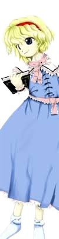

Alice é frequentemente vista como:
Reservada e séria – ela fala pouco e prefere manter uma postura calma e controlada.🧠 Inteligência e disciplina
Alice é extremamente estudiosa:
Dedica muito tempo ao aperfeiçoamento de sua magia
Planeja tudo com cuidado
Valoriza técnica e precisão em vez de força bruta
Ela busca constantemente a perfeição em suas habilidades.
🎎 Natureza solitária
Apesar de não ser hostil, Alice prefere ficar sozinha:
Gosta de trabalhar em seus próprios projetos
Evita interações desnecessárias
Se sente mais confortável com suas bonecas do que com pessoas
Mesmo assim, ela não é incapaz de formar laços.
🌸 Lado gentil
Alice possui um lado gentil escondido:
Demonstra cuidado com suas criações
Pode ajudar outras pessoas quando necessário
Tem um senso de responsabilidade com o que faz
Mas raramente expressa isso de forma aberta.
🧩 Relação com os outros
Ela mantém relações limitadas:
Tem uma rivalidade amistosa com Marisa Kirisame
Convive com os habitantes da Floresta da Magia
Interage ocasionalmente com outras magas
Geralmente mantém uma distância emocional segura.
Maga da Floresta da Magia
Alice vive sozinha em sua casa na Floresta da Magia, onde passa a maior parte do tempo estudando e aperfeiçoando suas habilidades mágicas.
Manipuladora de bonecas
Seu principal foco é a criação e controle de bonecas mágicas, buscando desenvolver marionetes totalmente autônomas.
Manipulação de bonecas
A habilidade central de Alice é controlar bonecas mágicas:
Controla várias bonecas simultaneamente
Coordena ataques em grupo com precisão
Usa fios mágicos quase invisíveis
Pode criar formações estratégicas com suas marionetes
Seu estilo de combate é técnico e estratégico.
Magia avançada
Alice é uma maga experiente:
Cria bonecas encantadas
Usa magia elemental e de suporte
Realiza experimentos complexos com magia
Busca desenvolver bonecas completamente independentes
Controle de campo de batalha
Ela consegue dominar o espaço ao seu redor usando suas bonecas, dificultando a movimentação do inimigo.
Voo
Como maga, Alice pode voar livremente, participando de batalhas aéreas com grande controle e precisão.
Sua combinação de estratégia, disciplina e magia refinada faz dela uma adversária extremamente perigosa e calculista.

Espécie: Youkai
Título: Marionetista de Sete Cores (Seven-Colored Puppeteer)